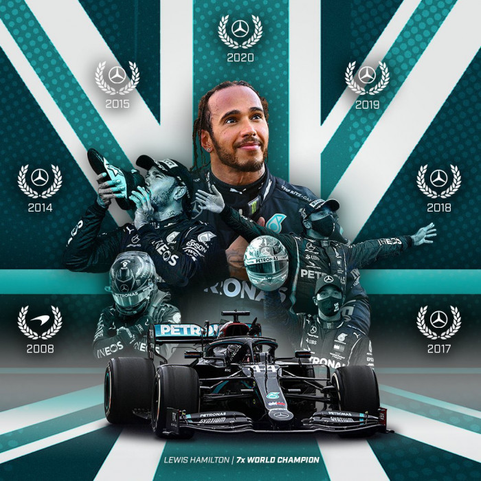
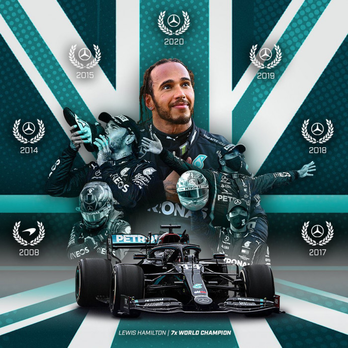
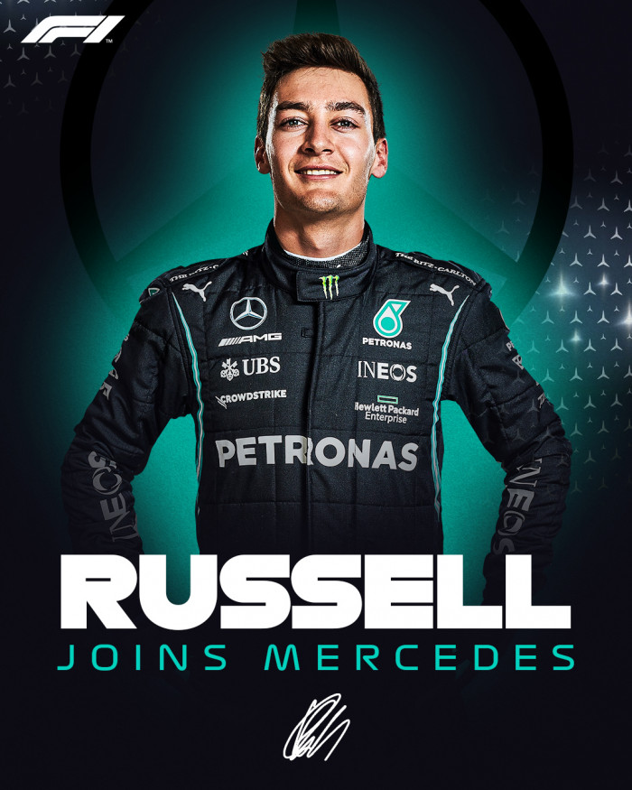

Qui sont les pilotes ?
Lewis Hamilton (44)
Lewis Hamilton, né le 7 janvier 1985 à Stevenage, en Angleterre, est un pilote de Formule 1 britannique. Il détient sept titres mondiaux, ce qui en fait l'un des pilotes les plus titrés de l'histoire de la F1. Depuis 2013, il pilote pour l'équipe Mercedes, accumulant de nombreuses victoires et établissant de nombreux records. Hamilton est également connu pour son engagement en faveur de la diversité et de l'inclusion dans le sport automobile.
Plus d'infos
 

George Russell (63)


Plus d'infos
George Russell est un pilote de Formule 1 britannique né le 15 février 1998 à King's Lynn, en Angleterre. Il a commencé sa carrière en F1 en 2019 avec l'équipe Williams, avant de rejoindre Mercedes en tant que pilote titulaire en 2022. Russell est reconnu pour son talent prometteur et sa vitesse impressionnante, étant considéré comme l'un des jeunes talents les plus prometteurs de la grille.
Plus d'infos